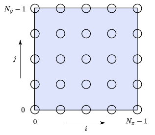

Parallel implementation of a lid driven cavity fluid solver with MPI and OpenMP. Written by Stephen Liu.
Table of Contents
Overview
As part of the HPC coursework, a serial lid driven cavity solver is parallelised with MPI and OpenMP. The problem to be solved is seen in Figure 1. The flow properties in the cavity at any time t is desired and must be computed via the 2D Navier-Stokes equation, which can be solved via discretised streamfunction and vorticity. A grid discretisation, in the form of a second-order central differencing equation, is generated, as seen in Figure 2. A preconditioned conjugate solver is used to solve the spatial aspect of the 2D Navier-Stokes equation. The time-domain aspect of the problem is then also solved by a five point stencil. By sequentially solving the spatial and time problem, the flow properties at any time t can be computed. A detailed discussion of the theoretical framework that is implemented is provided. For Doxygen users, this can be found here; for Github users, this can be found here [1].
 |  |
|---|---|
| Figure 1: Lid driven cavity domain | Figure 2: Lid driven cavity discretised domain |
Project Structure
The project is organised into the following structure:
src/: Contains .cpp implementation files.include/: Contains .h header files.test/: Contains test files.docs/: Contains documentation files. After runningmake doc, documentation can be found indocs/html/build/: Stores object files and executables. A symbolic link in the root directory allows executables to be accessed with./executablerather than./build/path/to/executable.
Pre-requisites
Ensure the following libraries are installed:
- OpenMP
- MPI (with mpiexec wrapper)
- BLAS (cblas wrapper)
- Boost::program_options
Installation
- Generate Documentation: Run
make docto create documentation in thedocs/directory. - Build Executable: Run
maketo compile the project and generate the./solverexecutable. - Build Unit Tests: Run
make unitteststo generate the./unittestsexecutable. - Clean Up: Run
make cleanto remove build artifacts.
Usage
This code uses both OpenMP and MPI for parallelisation. To control the number of threads, the environment variable OMP_NUM_THREADS should be set beforehand and number of processors set via -np. --bind-to none is recommended to prevent threads competing for the same core.
An example program execution is shown below, with initial data written into ic.txt and final data written into final.txt.
Troubleshooting
Some common issues are discussed here.
Issue: Code running slowly even though problem size is small or using lots of processors?
First check that the environment variable OMP_NUM_THREADS has been set using echo $OMP_NUM_THREADS. If this is empty set to export OMP_NUM_THREADS=1. If this is not the case, then ensure --bind-to none is used and make sure not using more threads than physically available.
References
[1] Dr Chris Cantwell. High-performance computing coursework assignment. Department of Aeronautics, Imperial College London, 2024.